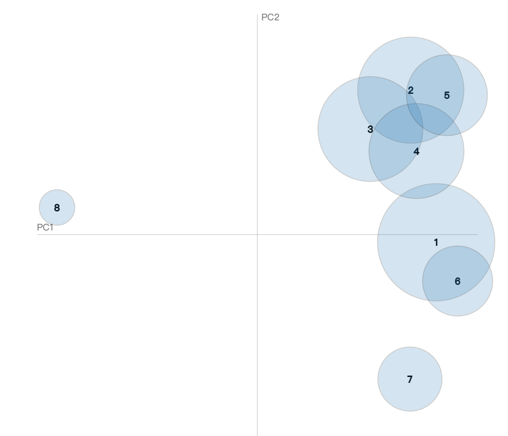
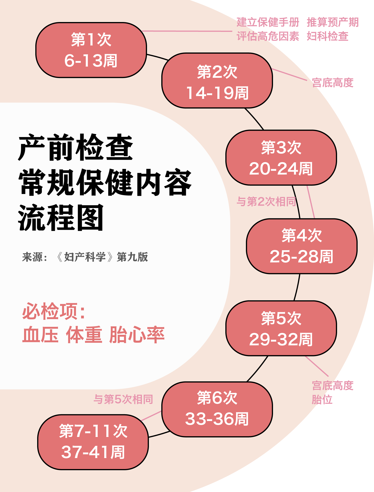

我们了解生育风险吗？
“我马上就特别虚弱，看不清对象的脸，听觉也慢慢模糊”
“把天叫塌了”
产后的健康影响呢？
“生完第二天发现肚子和生前一样大，产后三个半月肚子小了一些，黑色素还没退完”
“哪怕不累的时候也没有和宝宝接触的欲望，甚至有点厌恶宝宝”
我们真的了解生育吗？
“每次起床或者躺下都要花好几分钟的时间，包括走路都是，动作非常非常缓慢，有好几次疼得直掉眼泪”
“知道糖耐不过需要忌口好多东西，还要每次餐后运动，瞬间觉得快乐没有了”
“（她）还没长好就要给她弄出来，觉得自己没保护好她，内疚地哭”
“学会接受自己，接受做母亲的事实”
从2000-2021年，中国孕产妇死亡率从53/10万下降至16.1/10万。2000年，农村孕产妇死亡率是城市的两倍多，但2010年后，农村孕产妇死亡率基本和城市持平。
在所有死亡病例中，产科出血是我国孕产妇死亡的最主要原因，在孕产妇死亡总数中占比超20%。妊娠期高血压、心脏病、羊水栓塞是我国孕产妇死亡的第二大原因，各占孕产妇死亡总数10%左右。产褥感染和肝病是我国孕产妇死亡的第三大原因。
我国孕产妇死亡率在全球视角下如何？据联合国估算，2017年，我国孕产妇死亡率为29/10万（事实上，据中国卫生健康统计年鉴，中国2017年孕产妇死亡率为19.6/10万），是全球第74名（由低到高排，最低的为第一名）。发达国家和欠发达国家的孕产妇死亡率可以相差数百倍。波兰、挪威、意大利、白罗斯孕产妇死亡率全球最低，仅有2/10万。而南苏丹孕产妇死亡率全球最高，达到1150/2万，是前者的575倍。
孕产妇死亡率是世界公认的衡量国民健康水平与社会进步的三大综合指标之一。当前，我国的孕产妇死亡率已经远低于全球的平均水平（53/10万），位于全球中高收入国家的前列。
而21世纪以来我国孕产妇死亡率的大幅降低要得益于孕产妇保健情况的不断向好。1995年以来，孕产妇住院分娩率大幅度上升，2010年后全国孕产妇住院分娩率稳定在99%以上。目前，我国孕产妇保健情况达到了一个较高的水平，系统管理*率、产前检查率、产后访视率也达到了90%以上。
我国被世界卫生组织评定为“全球十个妇幼健康高绩效国家之一”。据《2022卫生统计年鉴》，截至2021年，全国共有妇产医院793家，妇幼保健机构3032家；妇产医院卫生技术人员达到8.65万人，妇幼保健机构卫生技术人员达到45.4万人；妇产科执业（助理）医生总数占所有执业（助理）医生总数的8.7%，仅次于内科、外科和中医科。
当前，孕产妇死亡率在医疗技术、妇幼保健水平的进步下持续降低，生育的死亡风险已经不足以引起普遍的恐慌。但是，对于个体育龄女性而言，让她们担忧的风险还有很多。据《2022年中国育龄女性生殖健康研究报告》，女性的孕期压力普遍存在，48.4%的被调查者具有中度及以上（得分4分及以上）的孕期压力，而无明显压力（得分1-2分）的女性仅占15.8%，更有3%的女性压力值达到9分满分。
从怀孕开始，准妈妈们在孕期、分娩和产后三个阶段，都要挺过一道道难关。思思在怀孕约6个月时来到医院做糖耐量检测。她对此颇为担忧，因为如果糖耐不过，确诊妊娠糖尿病的话，那么接下来的三个月孕期都需要严格忌口，和让她快乐的甜品、奶茶说拜拜。空腹指标和饮糖水一小时后的指标都正常，思思松了一口气，高兴得想点一杯奶茶奖励自己。可最终这杯奶茶没有下单，因为最后一份饮糖水后二小时的糖耐指标没有通过。从此，思思踏上了妊娠控糖之路。
秋萍的分娩过程是“难产中的难产”，过了预产期却毫无反应的她在医生的建议下住院催产。塞入催生药后，宫缩一次比一次疼，秋萍眼泪没停过，却什么都不能做，只能忍受着剧痛等消宫颈、开内检。从半夜2点开始，秋萍生了3个小时。“我确信自己不可能生出来，因为已经没力气了。”经历了大半天痛苦的催生，秋萍已经全身无力。助产士甚至让她下床蹲在地上生，也依然无济于事。羊水浑浊呈黄绿色，孩子的胎心一直很高，着急又无助的秋萍祈求医生采取侧切，在外阴切一刀。5:06，孩子生出来了，秋萍的心放松了下来，身体的疼痛却依然不止。到了6:30，正当秋萍和对象向家人报喜时，秋萍大出血，鲜红的血喷发而出。“连着喷完几次，我马上就特别虚弱，渐渐看不清对象脸，听觉也慢慢模糊，嘴巴也白了。”眼看秋萍就要休克过去，医生给秋萍打了止血针。秋萍挺了过来，但也已经连说话的力气都没有了。
莎莎去生产时，带了孕前的衣物作为换洗，可是生完之后却根本穿不进去，她的肚子根本没有变小，“甚至怀疑自己是不是还没生出来。”后来才知道，可能是宝宝太大而莎莎的身板较小，莎莎在孕晚期肚子一直往前凸，形成了悬垂腹，产后的肚子才一直难以恢复。大肚子因重力下垂，压迫到耻骨，莎莎遭受了严重的耻骨分离，最后两个月连走路都困难，“稍微动一下都疼得直掉眼泪”，起床和躺下都堪比酷刑，睡觉时必须花上好几分钟的时间，才能从一侧慢慢地躺下，且完全无法翻身。一次在医院检查时，从候诊室到检查室不到10米的距离，莎莎走了好久好久，以至于医生以为她没听到叫号，走出来找她。
这些经历真实地发生在不同准妈妈们的身上，而要遭遇这些痛苦的可能性却足以让女性群体对生育感到害怕。已经生产的妈妈们在网络上分享自己走过的“鬼门关”，还未怀孕的女性看到这些内容产生共情，部分地转化为对生育的恐惧。我们从微博上爬取了2018年12月到2022年12月与“女性生育风险”有关的帖子，共计9918条，将微博正文内容用pkuseg中的网络语言模型分词后，运用LDA模型进行分析，划分出8个讨论主题。
点击对应话题板块查看详情
这些主题并不是彼此孤立的，它们会存在重合的部分。对各个主题降维后，我们得到8个主题之间的的相对位置与相似度。可以看出，主题2、3、4、5的联系比较紧密，它们都与个人具体的生育体验有关；位置越靠下的主题，越趋近于宏观与社会层面。

话题3“生育对健康的影响”与话题2“个体生育情况描述”、话题4“产妇自身生育条件”关联度较高。蚌埠医学院第一附属医院的刘永平医生表示，孕妇所要经历的生育风险因人而异，孕妇本人的基础疾病、年龄等身体健康状况都会影响其生育过程需要面对的健康问题的种类、数量与严重程度。其中，年龄是一个具有普遍性的影响因素，35岁以上生育即为高龄产妇，遭遇妊娠并发症的概率更大。
柳悦在36岁时意外怀孕，“经历了顺产所有的痛”。检查出妊娠糖尿病后，柳悦每天需要扎4-7次手指测血糖，同时打胰岛素，前期每天1针，28周以后每天3针。起初在最好吸收的肚皮打针，后来肚皮打针数量太多，转移到大腿外侧、左手手臂外侧打，直到左手手臂也没地方可以下针了，柳悦不得不请家人帮自己打针到右手手臂。34周时，柳悦出现先兆早产住进了医院，依然要靠每天打针控制风险。到了39周，医生在评估其妊娠糖尿病情况和尊重柳悦意愿的情况下，开始催生顺产。因为妊娠糖尿病，柳悦无法用药物催产，只能用物理方式，下午4点她的身体里被放入了叫“球囊”的仪器，从外面往仪器里灌水，让球囊将宫口撑开，促使破羊水。整个过程疼痛不堪，可偏偏柳悦始终无法自然破羊水，而球囊带来的疼痛不断加剧。直到第二天早上10点，医生取出了球囊，进行人工破水，但这并不意味着轻松，柳悦在分娩室“把天都快叫塌了”。正式分娩的过程中，助产士跪在柳悦的肚子上使劲往下摁，柳悦的整个肚皮都被跪得淤青。还有麻醉不完全、侧切、妊娠高血压，柳悦都经历了。
对柳悦而言，怀孕生产遭遇的问题多种多样，但都以剧痛作为结果。妊娠的各种并发症和分娩现象，最终都以“疼”的形式打在准妈妈们身上。
对于具体的生育风险因素，“乳腺癌”的讨论度最高。患有乳腺癌的女性能否生育、如何生育和过来人的经历受到高度关注，而对于生育行为和乳腺癌发病率之间的关系也有讨论。糖尿病、高血压、出血作为常见妊娠并发症和分娩现象，也被高频提及。
值得注意的是，“情绪”被提及1116次，孕产妇们的心理健康也面临极大的风险。研究显示，中国产后抑郁发生率为17.98%，然而这只包括正式确诊产后抑郁的数量，根据宝宝树《中国0-3岁婴幼儿生长现状白皮书》，近86%的妈妈都曾出现过产后抑郁的症状。
大乔在生育之前是一个乐观随和的人，然而在生完孩子之后，手纸用完、汽车晚点，哪怕是至亲的触碰都会让她大发脾气，曾经热爱的旅行和阅读也变得毫无价值意义。看着宝宝，大乔没有感到任何连接，不愿意和宝宝接触，甚至达到厌恶的程度，而同时也为自己的这种想法自责、焦虑，形成恶性循环。当她听到自己对自己说，“我不想生活再继续”的时候，她意识到自己需要立刻就医。产后抑郁方面的医生非常难找，大乔和她丈夫几经辗转才终于找到一位妇科激素方向的医生为大乔治疗。好在，根据医生建议注射孕酮的方法奏效了，大乔的精神状态回归，和宝宝的感情越来越深。“也算是有惊无险吧”。
我们或许无法消除生育风险的存在，但是通过科学及时就医、了解相关知识，我们可以将风险带来的实际上尽量降低。
03 如何降低生育风险
据《2022中国育龄女性生殖健康研究报告》，对生殖健康知识掌握较好的育龄女性仅占三成。可以看到，宝妈们可能会面临恶性肿瘤、并发症，可能抑郁、焦虑、烦躁，也可能“迎接”平不下去的小腹、擦除不了的妊娠纹。是否有方法改变这样的情况呢？
首先要学知识。“对这种生育风险知识的了解和学习，能带来哪些好处？首先对自己的身体的变化状况有更多的了解，就能及时知道有哪些问题。”清华大学第一附属医院妇产科侯医生（小红书账号：妇产科侯医生）说道。了解各类知识后，才能知道什么时候应当控制体重、感受胎动异常应该怎么办等等，也才不会被网络上别有用心的信息煽动无谓的情绪。
思思患上妊娠糖尿病后 ，花钱在医院用一天时间“上了一课”，学会了如何用吃和运动控制血糖。她每天按照医院教的吃六餐，尽力让食谱变出花样，但依然难掩食材有限、口味单一的事实。她调整心绪，在社交平台上打卡科学饮食，坚持76次后，顺利迎来了宝宝的诞生。
莎莎在怀孕第17周打喷嚏时开始漏尿，她从社交平台上了解到凯格尔运动，“坚持做了一周以后漏尿的问题就没有了，我一直坚持到生完一个月”。莎莎发现，凯格尔运动很简单、效果很好。一直坚持做是因为了解到它可以锻炼盆底肌的力量，有助于生产。“确实我顺产非常顺利，几分钟就生出来了”。莎莎的耻骨分离症状同样是通过简易的运动缓解的。
在产前，最主要的还是相信医院，准妈妈们需要遵循医嘱，关注、守护身体健康。侯医生介绍，现在产科做得比较完善，重视检查与评估。整个孕期会安排 10 至 12 次产检，尽可能排除身体的潜在隐患并评估分娩风险。北京正遵循全国统一部署，施行孕产妇“五色球”管理标准，指标正常的孕妇是绿色球，风险值更高的分别是黄色、橙色、红色和紫色。每位准妈妈会得到一本孕期手册，由医生记录每次产检情况，根据手册内容进行风险值分类管理。北京要求二级医院和私立医院不能接红球孕产妇，患上传染病的“紫色球”准妈妈需要额外特殊护理，送往专门接收患有传染病产妇的医院。医务人员也在通过课程、进修和座谈研讨会不断更新知识、相互学习。

顺产的风险低于剖宫产。剖宫产是一个手术，并不是常规分娩方式，它对身体的损伤和潜在并发症更多。但两者并不是平等的二选一——正常情况下，顺产这样的自然分娩方式是排在第一位的。同时，这项选择题的回答者并不是产妇，而是医生——医生将根据产妇情况选择适合的分娩方式。“无痛分娩是一项不错的选择”，侯医生说，一些怕疼的产妇可能会紧张、焦虑，增大分娩的不确定因素。疼痛减轻对产妇身心的紧张都有非常好的缓解作用。
对于产后出血这一导致孕产妇死亡的最大原因，侯医生介绍了处理手段。提前备足更大量的血，“这种情况下我们要备 800 到 1000 毫升用于紧急出血”。还要评估出血的高危因素，做相应预案并指导分娩方式。当产妇出血达到一定量时，换更有经验的医生抢救治疗。
侯医生还讲道，现在基本上每个医院的产科都有专门的抢救小组，小组定期演练，提升工作流畅度。整个抢救流程以及药物选择内容被要求展示在产房墙上，以防操作过程中遗漏。一切行动都是为了增加抢救成功率。除开产后出血、血栓等短期风险，长期来看，还可能出现产后抑郁、生殖功能障碍、漏尿等情况，“宝妈们可以去到产后康复门诊寻求帮助”。如若心理状态出现异常，也可以在产科或是心理科得到进一步诊疗。
曾患有产后抑郁症的大乔说，“如果产后抑郁发生在自己身上，一定不要自责，这是非常普遍的激素变化过程，也是产后恢复的重要部分。要给自己时间慢慢恢复，必要时积极寻求医生帮助。如果身边的家人朋友出现情绪上的异常，一定要及时关注。”
“我觉得生育真的不能说是损伤，它是多数女性都要经历的自然过程。”对于生育的健康风险，侯医生这样看待。“孕妇在分娩的过程中进行详细的检查，可以发现以前没有注意到的身体问题。分娩本身可能会缓解子宫内膜相关的妇科疾病，如子宫内膜异位症、痛经等，还能降低子宫内膜恶性肿瘤的发生概率。”“从这个角度来讲，生育也有一些有益的地方，所以不好说生孩子对身体到底是有害的还是有利的。”
曾患妊娠糖尿病的思思直言，“生育对女性来说是一种幸福又崩溃的经历，生育风险必然存在，积极乐观面对就好。”
回想自己的分娩过程，柳悦说虽然自己“经历了顺产所有的痛”，但人生也因此进入到新阶段。“他在我的肚子里孕育，我把他培养长大，他跟我有相似的面孔，他会抱着我的腿喊妈妈，我的内心是柔软的。他给我的人生带来了更多不一样的可能。”
生育并不是女性人生中的必选项。当我们站在选择的十字路口时，客观了解生育的健康风险，知道我们即将面对的是什么，才能做出更理智、不会后悔的选择。
（文中思思、秋萍、莎莎、柳悦、大乔均为化名）